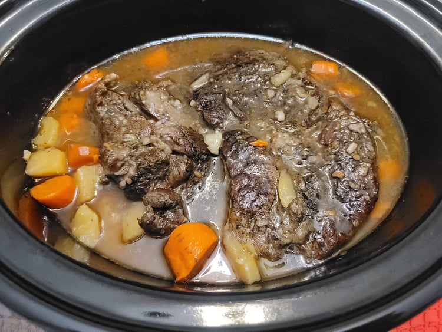

Pot Roast

Ingredients:
- 4-5 lb Chuck Roast
- 2 tsp Salt
- 1 tsp Black pepper
- 1 tsp Dried thyme
- 2 tbsp Canola oil
- 1 lb Carrots, cut into 2 inch chunks
- 2 lb Gold potatoes, peeled, cut into large chunks
- 2 cloves Garlic, minced
- 2 cups Beef broth
- 2 tbsp Cornstarch, mixed with 2 tbsp Water
- Parsley, chopped
Instructions:
- Season the beef with the salt, pepper, and thyme. Then heat the oil in a large pan over medium-high heat. Brown the beef for 4-5 minutes on each side.
- Add the carrots, potatoes, and garlic to the slow cooker. Then lay the beef over the vegetables. Add the beef broth and let cook on low for 8-10 hours or on high for 5-6 hours.
- One hour before the beef is finished, remove the beef from the slow cooker and mix the cornstarch slurry into the sauce. Place the beef back over the vegetables and let it cook for the remaining hour.
- Spoon some gravy over the beef and garnish with parsley. Serve immediately.